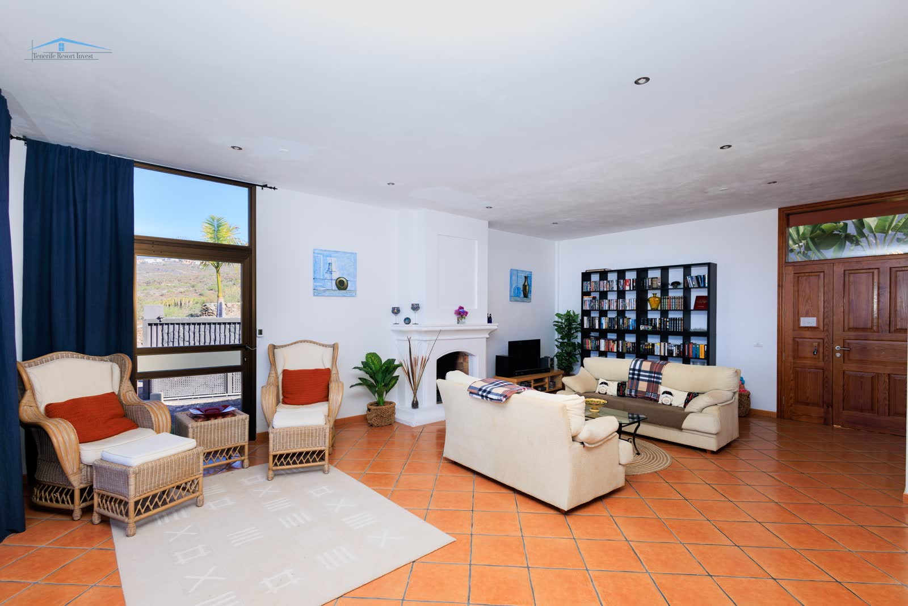
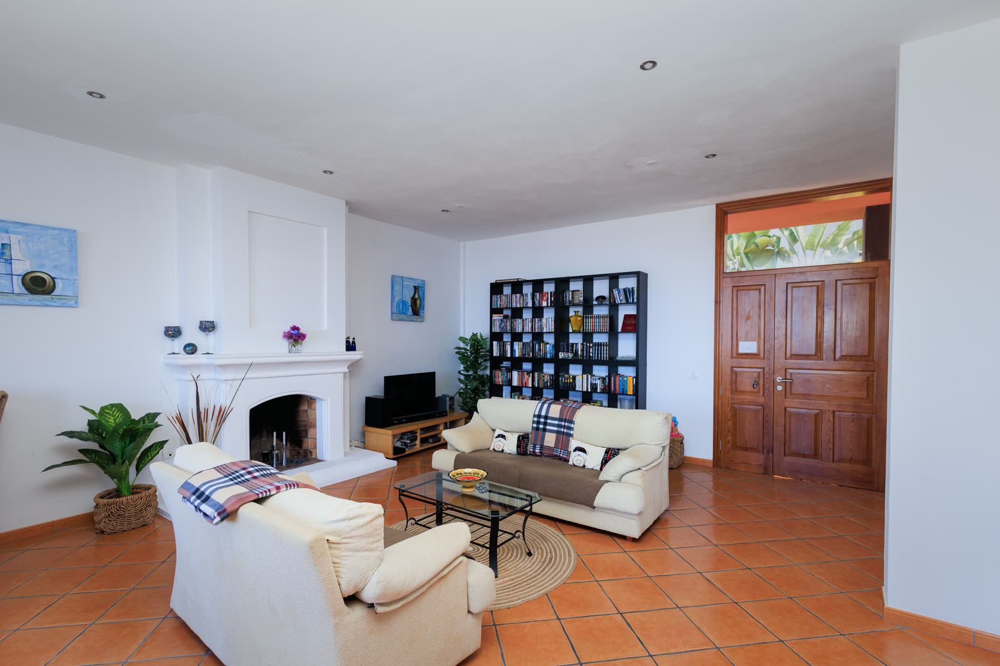
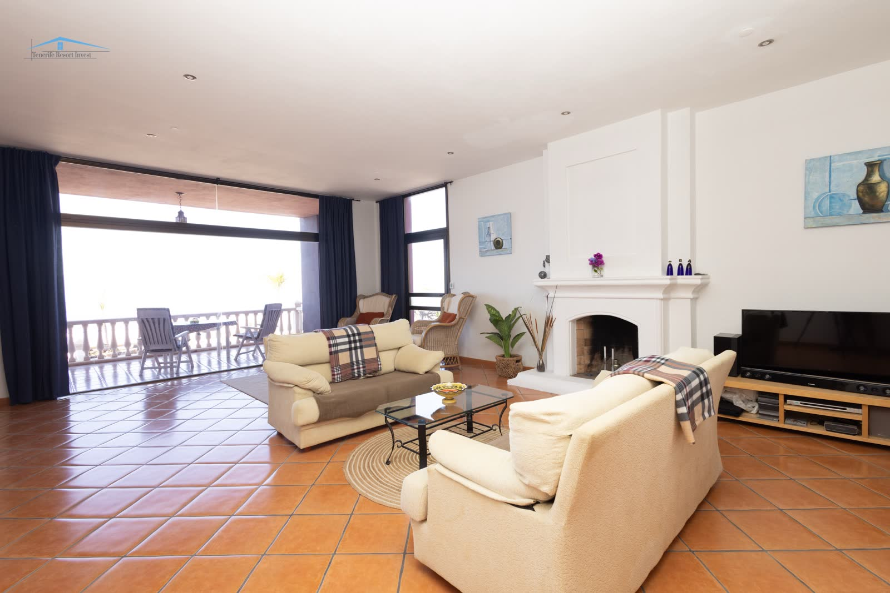
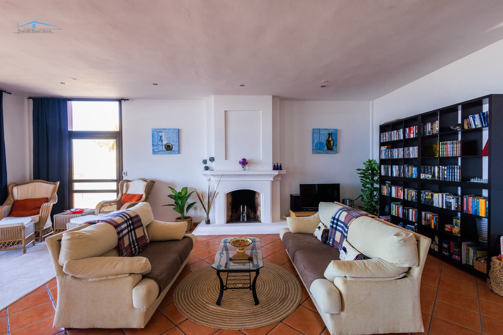
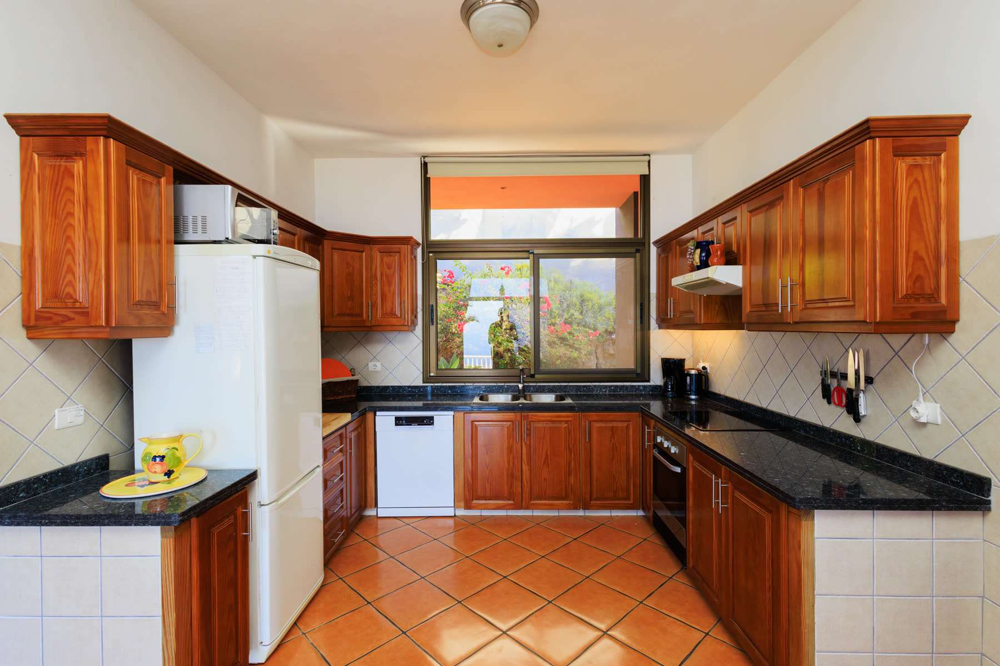
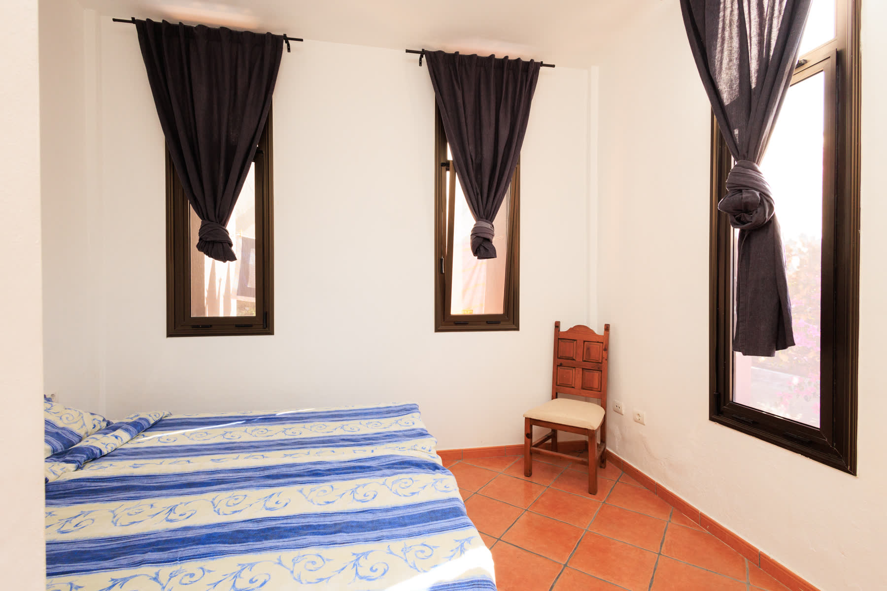
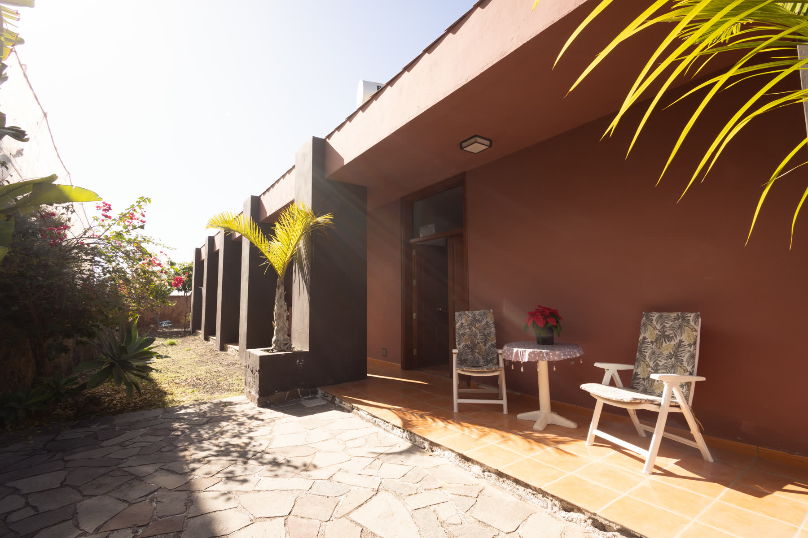
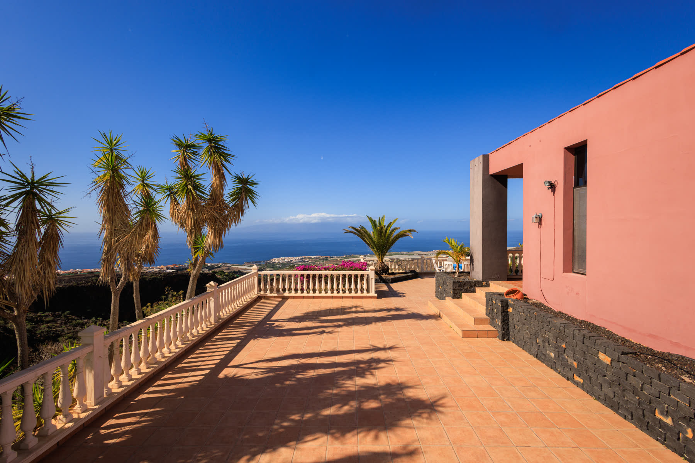
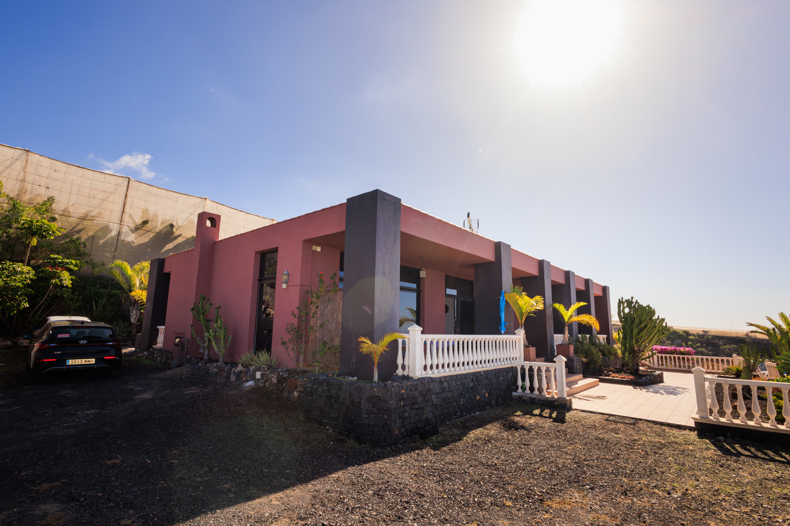

La Maleza was TRI's first signature development — a Canarian finca in the rural south. Not a house flip. Acquired, designed, built, and handed over across four years between 1999 and 2002, sold to its first owner in 2003. Clay floors, wide terraces, panoramic views from the southern slopes down to the Atlantic. Twenty-three years later, TRI represented the house a second time — resold to its new owner in 2026. La Maleza fue la primera promoción emblemática de TRI — una finca canaria en el sur rural. No un arreglo rápido. Adquirida, diseñada, construida y entregada a lo largo de cuatro años entre 1999 y 2002, vendida a su primer propietario en 2003. Suelos de barro, amplias terrazas, vistas panorámicas desde las laderas del sur hasta el Atlántico. Veintitrés años después, TRI representó la casa por segunda vez — revendida a su nuevo propietario en 2026.
No longer availableYa no disponible












La Maleza is where TRI became a developer, not just an agent. Stazio had been selling houses in the south since 1981. By the late 1990s he wanted to do what no broker on the island was really doing — acquire the land, draw the house, supervise the build, hand over finished keys. La Maleza was the first.
A Canarian finca in the rural south, acquired in the late 1990s. A four-year build starting in 1999. Stazio took architectural direction and handled site supervision personally. Clay floors laid in the traditional island pattern. Wide terraces that followed the slope instead of cutting it. Panoramic views from the southern ridge down to the Atlantic, framed by the landscape the house was set into rather than imposed on.
Finished in 2002 — kitchen installed, terraces paved, the Atlantic visible through the palms at the edge of the property. The first buyer took possession in 2003. That handover became a reference point in TRI's archives: proof the agency could acquire, build, and sell a house from the ground up. Everything Stazio built afterwards — Villa Infiniti, Villa Malibu, Villa Arizona, Villa Bali — traces back to La Maleza.
2026: twenty-three years after the first handover, La Maleza came back to market and TRI represented it again. The house was resold earlier this year to its new owner — the same agency, two sales of the same house, two generations apart.
La Maleza es donde TRI dejó de ser sólo agente y se convirtió en promotor. Stazio llevaba vendiendo casas en el sur desde 1981. A finales de los 90 quería hacer lo que ningún agente de la isla estaba haciendo de verdad — adquirir el terreno, dibujar la casa, supervisar la obra, entregar llaves terminadas. La Maleza fue la primera.
Una finca canaria en el sur rural, adquirida a finales de los 90. Una obra de cuatro años iniciada en 1999. Stazio asumió la dirección arquitectónica y el seguimiento de obra en persona. Suelos de barro puestos con el patrón tradicional de la isla. Amplias terrazas que seguían la ladera en lugar de cortarla. Vistas panorámicas desde la cumbrera sur hasta el Atlántico, enmarcadas por el paisaje en el que la casa se asentaba en vez de imponerse.
Terminada en 2002 — cocina instalada, terrazas pavimentadas, el Atlántico visible entre las palmeras al borde de la parcela. El primer comprador tomó posesión en 2003. Esa entrega se convirtió en un referente en los archivos de TRI: prueba de que la agencia podía adquirir, construir y vender una casa desde cero. Todo lo que Stazio construyó después — Villa Infiniti, Villa Malibu, Villa Arizona, Villa Bali — se remonta a La Maleza.
2026: veintitrés años después de la primera entrega, La Maleza volvió al mercado y TRI la representó de nuevo. La casa fue revendida a principios de este año a su nuevo propietario — la misma agencia, dos ventas de la misma casa, separadas por dos generaciones.
La Maleza is no longer on the market — it was handed over in 2003 and hasn't returned. It lives on this site as the origin point of TRI's developer track record. Alongside Villa Infiniti (2017), Villa Malibu (2018), Villa Arizona (2023), and Villa Bali (in progress), it's the portfolio that tells you what TRI's agency-plus-developer model actually looks like — over a quarter-century of it. Talk to us about commissioning something similar.
La Maleza ya no está en el mercado — fue entregada en 2003 y no ha vuelto. Aparece en este sitio como el punto de origen del historial de promociones de TRI. Junto con Villa Infiniti (2017), Villa Malibu (2018), Villa Arizona (2023) y Villa Bali (en curso), es la cartera que muestra lo que realmente significa el modelo agencia-más-promotor de TRI — con más de un cuarto de siglo de recorrido. Hablemos sobre un encargo similar.
La Maleza is sold, but the pattern lives on in every villa TRI has developed since. If you want a house built from raw land — acquired, designed, supervised, delivered — Stazio answers personally. La Maleza está vendida, pero el patrón sigue vivo en cada villa que TRI ha promovido desde entonces. Si quiere una casa construida desde cero — adquirida, diseñada, supervisada, entregada — Stazio responde personalmente.